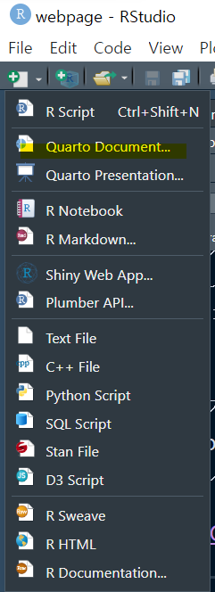

# not run
install.packages('quarto')Quarto란?
Quarto는 Rmarkdown을 계승하는 차세대 문서양식입니다.
이미 아실지 모르겠지만, RStudio는 R 뿐만 아니라 Python까지 지원하고 있습니다 (reticulate란 패키지를 통해).
다만 Rstudio 라는 이름 때문인지, Python 유저들은 jupyter를 주로 사용했던 것 같습니다.
아무튼 2022년 12월 이후, RStudio사는 POSIT으로 사명을 변경하였습니다. 이는 RStudio가 R 사용자만을 위한 통합개발환경 (Integrated Development Environment, IDE)에서 벗어나 R, Python, Julia 등을 사용하는 모든 데이터 사이언티스들을 위한 IDE를 추구한다는 의미라고 볼 수 있습니다.
Quarto 역시 마찬가지입니다. 전신이었던 Rmarkdown이 갖는 이름에서 벗어나 Quarto라는 새로운 이름을 통해 R과 Python 유저 모두 편리하게 사용할 수 있는 document 양식을 지향합니다.
실제로 Quarto는 기존의 Rmarkdown 사용자를 위한 knitr 뿐만 아니라 python의 jupyter notebook 사용자들을 위한 jupyter 모드도 사용이 가능합니다.
더 자세한 내용은 Quarto 홈페이지를 참고하세요!
Quarto 준비하기
Quarto를 사용하기 위해서는 Quarto 패키지를 설치해야 합니다.
Quarto 설치가 완료되었다면 RStudio의 좌측 상단에서 Quarto document를 생성할 수 있습니다.

Quarto document는 .qmd 확장자로 끝나는 파일입니다.
.qmd 파일은 Source 에디터, Visual 에디터로 작업을 수행할 수 있습니다. 특히 Visual 에디터는 다양한 markdown 문법들을 단축키들을 활용해 원하는 문서를 쉽게 만들 수 있다는 장점이 있습니다.
Quarto의 구조
Quarto는 크게 3가지의 부분으로 구성됩니다.
1) YAML
YAML은 YAML Ain’t Markup Language의 이름을 갖고 있는 언어로, 가독성에 초점을 두고 개발되었습니다.
Quarto의 시작 부분에 문서 형식을 설정하는 용도로 yaml문법을 이용합니다.
대표적으로 설정해줄 수 있는 옵션은 다음과 같습니다.
toc: markdown의 목차를 한눈에 볼 수 있게 색인을 생성합니다.toc-location: toc의 위치를 설정합니다.left,rightcode-fold: r 코드 부분을 접거나 펼 수 있습니다.theme: Quarto의 문서 테마를 지정할 수 있습니다. 참고
그 외 설명은 quarto 공식 홈페이지를 참고하세요.
2) R code
r chunk를 만드는 방법은 (백틱``)을 3번 입력하거나, 단축키(ctrl+shift+i)를 이용하면 됩니다.
3) markdown
간단한 markdown 문법을 소개합니다. quarto의 visual 에디터를 이용할 때의 단축키도 첨부합니다.
Header
제목과 같이 큰 글자는 #의 개수에 따라 달라집니다.
글자 옵션
quarto에서 사용할 수 있는 텍스트 옵션들은 다음과 같습니다.
굵게: Asterisk (
ctrl + b)기울이기: Asterisk (
ctrl + i)밑줄: Asterisk (
ctrl + u)superscript: R2 (
^텍스트^)subscript: HRmax - HRmin (
~텍스트~)strike through :
밑줄찍찍(~~텍스트~~)verbatim code:
Quarto(ctrl + d)글자 색상 변경: special css 문법 활용하기.
링크 삽입: 네이버
이미지 삽입:

blockquote : 문장 앞에
>를 붙여줍니다.
인용구 등을 표시할 때 blockquote를 많이 사용합니다.
List 출력
1) Unordered list (순서없는 리스트)
- Item 1
- item 1-1
- item 1-2
- item 1-2-1
- item 1-2-2
2) Ordered list (순서가 지정된 리스트)
- item 1
item 1-1
item 1-2
sub-item 1
- item 1
자세한 markdown syntax는 Quarto 홈페이지를 참고하세요.
Quarto 실행하기
Render 버튼(shortcut: ctrl + shift + k)을 누르시면 html 문서가 생성됩니다.
1 + 1[1] 2terminal 창의 명령어를 통해서도 실행 가능합니다. 해당 파일의 경로에서 아래의 명령어를 실행합니다.
quarto render test.qmd --to html# | echo: true
#| eval: false
2 * 2[1] 4code 출력과 관련된 옵션은 다음과 같습니다.
echo: false는 입력한 코드가 출력되지 않게 합니다.eval: false는 입력한 코드의 결과물이 출력되지 않게 합니다.warning: false는 코드 실행 시 나타나는 경고 메시지를 출력하지 않게 합니다.
```{r}
#| warning: false
#| message: false
#| output-location: column
#| label: fig-airquality
#| fig-cap: Teup and ozone level
library(ggplot2)
ggplot(airquality, aes(Temp, Ozone))+
geom_point()+
geom_smooth()
```
Callout
Note
callout에는 5 종류가 있습니다.
Warning
Warning callout 입니다.
Important
Important callout 입니다.
Tip
Tip callout입니다.
Danger
Caution callout 입니다.
Tabsets
markdown에서는 tab을 나누어 각각 화면을 출력할 수 있습니다.
Split up and flip between sections
```{r}
#| eval: false
head(mtcars)
```head(mtcars)| mpg | cyl | disp | hp | drat | wt | qsec | vs | am | gear | carb | |
|---|---|---|---|---|---|---|---|---|---|---|---|
| Mazda RX4 | 21.0 | 6 | 160 | 110 | 3.90 | 2.620 | 16.46 | 0 | 1 | 4 | 4 |
| Mazda RX4 Wag | 21.0 | 6 | 160 | 110 | 3.90 | 2.875 | 17.02 | 0 | 1 | 4 | 4 |
| Datsun 710 | 22.8 | 4 | 108 | 93 | 3.85 | 2.320 | 18.61 | 1 | 1 | 4 | 1 |
| Hornet 4 Drive | 21.4 | 6 | 258 | 110 | 3.08 | 3.215 | 19.44 | 1 | 0 | 3 | 1 |
| Hornet Sportabout | 18.7 | 8 | 360 | 175 | 3.15 | 3.440 | 17.02 | 0 | 0 | 3 | 2 |
| Valiant | 18.1 | 6 | 225 | 105 | 2.76 | 3.460 | 20.22 | 1 | 0 | 3 | 1 |
그래프 출력하기
# #|을 통해 r chunk의 옵션을 변경할 수 있습니다.
# layout을 통해 figure의 위치를 조절할 수 있습니다.
require(dplyr)
require(ggplot2)
cars |>
ggplot(aes(speed, dist)) +
geom_point()
mtcars |>
ggplot(aes(disp, mpg))+
geom_point()

Reference
https://quarto.org/docs/visual-editor/
https://quarto.org/